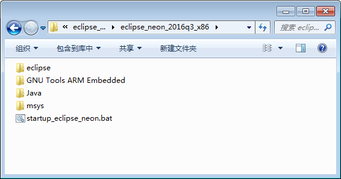

搭建开发环境¶
Eclipse集成开发环境¶
Eclipse是一个开放源代码、基于Java的可扩展开发平台，同时它也是著名的、跨平台的自由集成开发环境（IDE）。
要使用Eclipse，需要正确安装 Java 运行环境，并针对特定的开发语言（如C/C++）和程序最终运行的目标平台（如Cortex-M、ARM、Cortex-A）安装相应的工具链、交叉编译器等相关的插件。这些安装过程都是相对复杂的，容易出错，特别是各种工具对环境变量的要求和影响等。为避免用户自己在安装开发环境软件时出现一些问题，我们提供了一个 eclipse 开发环 境软件包 “eclipse_neon_2016q3_x86.7z” ，其包含了 eclipse 软件、java 运行环境及相关的插件。用户拿到软件包后，直接解压后即可使用，无需其它任何安装过程，解压出的软件包目录如picture_所示。
注解
推荐使用7z压缩软件解压 eclipse_neon_2016q3_x86.7z 软件包，注意该软件包不能解压到过深的路径，否则会出现解压失败的问题，eclipse软件可通过目录 “ide” 下的链接获取。
dsdsh感想三盯 picture 。
test
Clicking on this internal hyperlink will take us to the target below.
The hyperlink target above points to this paragraph.
The targets "target1" and "target2" are synonyms; they both point to this paragraph.
防护等级发和 hyperlink-name 于
- eclipse 目录下为neon版本的eclipse软件。
- GNU Tools ARM Embedded 目录下为GCC-ARM工具链，Eclipse只是一个框架，需要使用GCC-ARM的编译和调试工具链。
- java 目录下为java运行环境(jre)，JRE是Sun（现在是甲骨文公司旗下的公司）的产品，是运行eclipse所必须的环境集合。
- msys 目录下为msys 1.0软件，msys是一个小型的GUN环境，包括了基本的bash、make等工具，Eclipse需要使用msys提供的make工具。
- startup_eclipse_neon.bat 为启动eclipse的批处理脚本，运行该脚本会自动设置jre和GCC-ARM工具链的环境变量并启动eclipse软件。
用户需要使用eclipse进行开发时，只需双击 startup_eclipse_neon.bat 脚本启动eclipse后，导入SDK示例工程即可进行编译和调试，可见eclipse的开发环境搭建非常简单。
J-Link仿真环境¶
J-Link 是SEGGER 公司为支持仿真ARM 内核芯片推出的同时支持JTAG/SWD调试接口的仿真器。配合Eclipse，IAR EWAR，ADS，KEIL，WINARM，RealView等集成开发环境支持所有Cortex-M、Cortex-R4、ARM7、ARM9、ARM11 内核芯片的仿真，通过RDI 接口和各集成开发环境无缝连接。
J-Link软件安装¶
J-Link仿真器可以作为开发板的仿真调试器，首次使用需要安装J-Link 软件，可通过 “ide” 目录中的链接获取。
注意
V614b 版本 JLink 兼容性较好，推荐使用此版本。
左键双击J-link软件后，开始进行安装，安装过程如下：
1、软件开始安装后，在安装向导页面点击 【Next】，如 a_picture_jlink_install1 所示。
J-Link软件安装向导
2、点击 【I Agree】，使安装能往下进行，如 a_picture_jlink_install2 所示。
J-Link软件安装向导
3、选择安装路径为默认安装路径(如有特殊需要可点击 【Browse】 选择其它安装路径)，然后点击 【Install】，如 a_picture_jlink_install3 所示。
J-Link软件选择安装目录
4、等待安装完成后，会弹出提示界面，点击 【Finish】 结束安装，如 a_picture_jlink_install4 所示。
J-Link软件成功安装
J-Link仿真器驱动安装¶
首次使用J-Link仿真器时，一般情况下，如果安装了J-Link软件，只要用USB线将PC机和J-Link仿真器连接起来，即可自动完成驱动的安装。驱动安装完成后，可以在设备管理器（鼠标选中计算机->右键->管理->设备管理器）中看到J-Link设备，如 a_picture_jlink_deinstall1 所示。
J-Link仿真器驱动已正确安装
若无法自动完成安装，将如 a_picture_jlink_deinstall2 所示，此时需要手动安装，按照下面步骤操作即可。如果已自动完成安装可跳过下面步骤。
J-Link仿真器驱动安装出错
1、通过USB数据线将J-Link仿真器和PC机连接起来，打开设备管理器（鼠标选中计算机->右键->管理->设备管理器），打开后如 a_picture_jlink_deinstall2 所示。可以看到 【其它设备】 中，有一个带黄色感叹号的 【J-Link】。
2、双击带黄色感叹号的 【J-Link】，选中右击后，选择 【更新驱动程序】。接着弹出选择如何搜索驱动程序软件对话框，如 a_picture_jlink_deinstall3 所示，在图中选择 【浏览计算机以查找驱动程序软件】 这一选项。
选择更新驱动程序的方式
3、接着设置驱动程序路径，如 a_picture_jlink_deinstall4 所示，填入J-Link软件安装目录下相应驱动程序的路径即可，也可以选择 【浏览】 找到驱动程序的目录。对应的驱动程序路径即为：C:\Program Files (x86)\SEGGER\JLink_V614b\USBDriver\x64，如果是32位系统，路径的末尾应该是x86。选择路径后，直接点击 【下一步】 进入驱动安装，等待安装结束即可
选择驱动程序路径
安装结束后，可以在设备管理器中看到如 a_picture_jlink_deinstall1 所示的界面，表明驱动已经正确安装，J-Link仿真器可以正常使用。
为J-Link添加对M1052的支持¶
J-Link软件默认不支持M1052核心板上的IS25LP064A Flash的烧写，但是J-Link软件在6.00及以上的版本中可由用户自己添加Flash设备的支持，因此，为了方便用户使用J-Link工具烧写固件到IS25LP064A Flash中，开发了对应的烧写算法FLM文件，用户只需手动配置以下两个步骤。
1.添加FLM
复制光盘资料中 “tools\M1052_IS25LP064A_FLM” 目录下的“M1052”文件夹(存放了“M1052_IS25LP064A.FLM”)到 “C:\Program Files (x86)\SEGGER\JLink_V614b\Devices” (此路径为JLink V614b的默认安装目录，用户需要根据自己的安装目录选择)目录下。复制后如 a_picture_devices_dir 所示：
J-Link的Devices目录
2.修改JLinkDevices.xml文件
用编辑器打开 “SEGGER\JLink_V614b” 目录下的“JLinkDevices.xml”文件，在文末的“</Device>”之后，“</DataBase>”之前添加如 JLink_add_device 所示的代码。
添加QSPI Flash设备¶
因为是XML代码，需特别注意代码的对齐，修改完成的JLinkDevices.xml文件代码片段如 a_picture_xml 所示：
修改后的XML文件
修改代码的操作比较麻烦，也可以直接拷贝 “tools\M1052_IS25LP064A_FLM” 目录下的“JLinkDevices.xml”并覆盖掉 “SEGGER\JLink_V614b” 目录下的“JLinkDevices.xml”。
至此， 基于i.MX RT1050的eclipse快速入门所需要的开发环境已经搭建完毕。